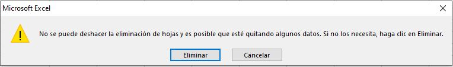
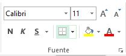

Excel
¿Qué es Excel?
Microsoft Excel  es una aplicación del tipo hoja de cálculo que forma parte del paquete Microsoft Office y se utiliza
para calcular, analizar y gestionar datos. A través de ella, podemos realizar diversas operaciones, desde las
más sencillas, como sumar y restar, hasta otras complejas, por medio de funciones y fórmulas. También permite
elaborar distintos tipos de gráficos para analizar y comprender los resultado de dichas operaciones.
es una aplicación del tipo hoja de cálculo que forma parte del paquete Microsoft Office y se utiliza
para calcular, analizar y gestionar datos. A través de ella, podemos realizar diversas operaciones, desde las
más sencillas, como sumar y restar, hasta otras complejas, por medio de funciones y fórmulas. También permite
elaborar distintos tipos de gráficos para analizar y comprender los resultado de dichas operaciones.
Proporciona herramientas y funciones eficaces destinadas a analizar, compartir y administrar datos con facilidad.
Las funciones, los filtros y las tablas dinámicas nos brindarán la posibilidad de resumir, analizar, explorar y
presentar datos para, luego, tomar decisiones. Con las macros es posible optimizar los procesos rutinarios
Conceptos básicos de Excel
Libro de trabajo
Un libro de trabajo es el archivo que creamos con Excel, es decir, todo lo que hacemos en este programa
se almacenará formando el libro de trabajo. Los libros de trabajo de Excel tienen la extensión .XLSX para que
el ordenador los reconozca como tal. Cuando se inicia una sesión de Excel automáticamente se abre un nuevo libro
de trabajo con el nombre provisional de Libro1. Esto lo puedes comprobar en la pantalla de Excel: en la barra de
título de la parte superior de la ventana verás como pone Libro1 - Excel.
Cada vez que empezamos un nuevo trabajo con Excel el número del libro irá variando dependiendo de cuántos se hayan
creado en esta sesión. Así, si empezamos otro trabajo, el nombre que se asigna será Libro2, el siguiente Libro3,
y así sucesivamente.
Observación: Nótese que el nombre asignado sólo sirve como referencia para identificar los trabajos mientras
no se hayan guardado. En ningún caso significa que el archivo ya se encuentra guardado. Un libro de trabajo está
formado por una o varias hojas. En principio constará sólo de 1 hoja aunque el número de éstas puede variar entre 1
y un número bastante alto, limitado por la cantidad de memoria disponible. Si miras en la parte inferior de la
ventana de Excel encontrarás las diferentes hojas del libro de trabajo. Cada una de ellas, según se vayan agregando,
serán nombradas de la forma Hoja1, Hoja2...
Hojas de cálculo
La hoja de cálculo es uno de los distintos tipos de hojas que puede contener un libro de trabajo. Es una herramienta
muy útil permite trabajar con gran cantidad de números y realizar cálculos u operaciones con ellos.
Las hojas de cálculo están formadas por columnas y filas. Es como una gran hoja cuadriculada formada por 16,384 columnas y
1,048,576 filas.
Columnas
Una columna es el conjunto de celdas seleccionadas verticalmente. Cada columna se nombra por letras,
por ejemplo A, B, C,.......AA, AB,........IV.
Filas
Cada fila se numera desde 1 hasta 1.048.576 y es la selección horizontal de un conjunto de celdas de una hoja de datos.
Celdas
La intersección de una columna y una fila se denomina Celda y se nombra con el nombre de la columna a la que
pertenece y a continuación el número de su fila, por ejemplo la primera celda pertenece a la columna A y la fila 1;
por lo tanto,la celda se llama A1.
Hacemos referencia a una celda por su dirección (coordenada), que se encuentra integrada por la letra de
la columna seguida por el número de fila a la que pertenece; por ejemplo, la celda B7 corresponde a la
intersección de la columna B y la fila 7 y la celda D15, a la intersección de la columna D y la fila 15. En estas
celdas es posible ingresar diferentes tipos de datos (texto, números, fechas o fórmulas y funciones) que usen valores
existentes en otras celdas para efectuar un cálculo determinado.
Cuando el cursor está posicionado en alguna celda preparado para trabajar con ésta, dicha celda se denomina Celda activa
y se identifica porque aparece más remarcada que las demás. De igual forma tenemos la fila activa, fila donde se encuentra la
celda activa, y columna activa, columna de la celda activa.
Rango
En una hoja de cálculo el Rango, que es un bloque rectangular de una o más celdas que Excel trata como una unidad.
Los rangos son vitales en la Hoja de Cálculo, ya que todo tipo de operaciones se realizan a base de rangos.
Administrar las hojas del libro
Es fundamental para mantener la claridad en nuestros libros de Excel saber administrar de una forma correcta las hojas
(o páginas) que componen el libro.
Cambiar el nombre a las hojas
Esto se puede hacer de dos maneras:
- Pulsando con el botón secundario (botón derecho para las personas diestras) sobre la pestaña
 y a continuación
pulsando en cambiar nombre:
y a continuación
pulsando en cambiar nombre:
- Directamente haciendo doble click en el nombre actual de la hoja.
Tras esto, en ambos casos simplemente escribimos, pulsamos Enter en el teclado y ya hemos cambiado el nombre de la hoja.
Cambiar el color de la pestaña
Pulsando con el botón derecho sobre el nombre de la hoja y a continuación moviendo el ratón hasta donde pone
Color de etiqueta se despliega una paleta de colores:
donde podemos elegir uno de los colores que aquí aparecen o pulsar sobre Más colores… para abrir un
menú de colores avanzado.
Eliminar hojas de cálculo
Para eliminar una hoja de cálculo hay que pulsar con el botón derecho sobre la hoja que queremos eliminar y
a continuación en Eliminar.
Si la hoja contiene algún dato nos aparecerá un mensaje preguntando si estamos seguros de querer eliminar
la hoja, pues cuando eliminamos una hoja no hay forma de recuperarla (a menos que hubiéramos guardado el fichero con
dicha hoja).

Insertar hojas de cálculo
En la parte inferior de la pantalla, a la derecha de las etiquetas de las páginas y a la izquierda de la barra
de desplazamiento se encuentra el símbolo .
Pulsando sobre este símbolo se crea una nueva hoja en blanco a la derecha
de la hoja que tengamos seleccionada .
Mover/Duplicar hojas de cálculo
Si pulsamos con el botón derecho sobre una hoja y a continuación sobre Mover o copiar:
Nos aparece una nueva ventana, donde podemos indicar dónde queremos mover la hoja (la hoja aparecerá a la izquierda
de la hoja que seleccionemos). Si hacemos esto marcando la casilla de la parte inferior de la ventana Crear una copia,
añadiremos una hoja igual a la seleccionada donde hayamos indicado.
Para hacer esto de manera más fácil podemos simplemente pinchar con el botón
izquierdo sobre el nombre de la hoja y arrastrar (sin soltar el botón izquierdo) hasta donde queramos mover la hoja.
Si hacemos esto mismo, pero pulsando y manteniendo la tecla “Ctrl” del teclado duplicaremos la hoja.
Insertar/Eliminar filas, columnas y celdas
Cuando estamos trabajando con una hoja de Excel con muchos datos a veces es necesario introducir nuevos datos en medio
de los datos que ya teníamos introducidos. Para ello, en vez de mover todos los datos anteriores, es más sencillo insertar
un rango de celdas en blanco, desplazando de lugar a las celdas anteriores, sin eliminarlas.
Esto se puede hacer desde la ficha Inicio > grupo Celdas
donde podemos insertar o eliminar celdas,
filas, columnas y hojas.
Para ello es necesario seleccionar la celda o rango de celdas donde queremos que se posicionen
las nuevas celdas y pulsar el botón del comando deseado.
Observación: Una forma más rápida de realizar la inserción de celdas o rangos
es seleccionar donde queremos que se posicionen las nuevas celdas (igual que antes) y pulsar en el teclado
Ctrl + + de manera simultánea. Para eliminar se hace exactamente lo mismo pero pulsando
Ctrl + - de manera simultánea.
Tamaño de las celdas
Por defecto todas las columnas en Excel vienen con un ancho de 10.71, y las filas con un alto
de 15. En algunos casos el tamaño de las celdas se modifica automáticamente al realizar acciones (al aumentar el tamaño
del texto de una celda aumenta el alto de la fila para ajustarse al alto del texto), pero también se puede cambiar
de forma manual con el comando Formato del grupo Celdas en la ficha Inicio.
Al pulsar este comando podemos introducir manualmente el alto o ancho de la fila o columna de la celda
seleccionada, así como autoajustar el alto o ancho de la columna para que el contenido de mayor tamaño de
la fila o columna quepa justo en la fila o columna sin dejar espacio vacío.
Observaciones:
-
Otra forma de introducir a mano el ancho o alto es pinchar con el botón derecho en la
letra de la columna o el número de la fila y seleccionar Ancho de columna… o Alto de fila….

-
Para autoajustar el tamaño también se puede hacer más rápidamente haciendo doble click en el borde derecho que delimita el ancho de la columna o en
el borde inferior que delimita el número de la fila y arrastrando (imagen de la derecha).
Formatos de celda
Aplicar un formato específico a las celdas se realiza únicamente para resaltar su contenido sobre las demás, por lo cual no
afecta a la funcionalidad del programa o de sus fórmulas, pero ayuda enormemente en el aspecto visual, sobre todo si el
fichero se termina compartiendo con más personas que no han participado en su creación
Formatos de celda
Las celdas de Excel son totalmente personalizables en cuanto a la forma en que muestran el contenido (colores,
tamaño de texto, efectos de texto, tipo de letra…), así como la alineación del contenido de la celda (centrado,
a la derecha, con sangría…).
Para editar el formato de las celdas se utilizan los grupos Fuente  y Alineación , ambos en la ficha Inicio .
y Alineación , ambos en la ficha Inicio .
-
El grupo Fuente agrupa los comandos para editar el color de celda, tipo de letra,
tamaño, estilo (negrita, cursiva, etc)
etc.
-
El grupo Alineación se utiliza para definir la alineación y orientación del contenido de la celda, y otros comandos
relacionados como Combinar y centrar y Ajustar texto.
Todas las opciones de modificación de la fuente y de la alineación son accesibles desde la vista normal de Excel
en la ficha Inicio. Sin embargo, si se pulsa sobre el botón en la esquina inferior derecha de cualquiera de los grupos
 se
puede acceder al menú del formato de celdas, desde el cual se visualiza, por pestañas, cada uno de los grupos
referentes al formato de las celdas, para una vista más clara de lo que estamos modificando gracias a la vista previa.
se
puede acceder al menú del formato de celdas, desde el cual se visualiza, por pestañas, cada uno de los grupos
referentes al formato de las celdas, para una vista más clara de lo que estamos modificando gracias a la vista previa.
Dentro del grupo Alineación están dos de los comandos más útiles de Excel en lo que a visualización se refiere:
Combinar y centrar y Ajustar texto.
Combinar y centrar
Cuando se seleccionan varias celdas y se pulsa este botón todas las celdas seleccionadas se combinan y pasan a
formar una sola celda de mayor tamaño.
Escribir sobre esta celda es equivalente a escribir sobre la celda del extremo superior izquierdo (celda B2 en
el caso de la imagen), cambiando únicamente el aspecto visual de la hoja, y por tanto cualquier referencia que
se quiera hacer a esta celda combinada se deberá hacer como si se referenciara la celda del extremo superior izquierdo.
Ajustar texto
Cuando se escribe un texto en una celda y este es demasiado largo para mostrarse en la celda puede ocurrir dos cosas:
si las celdas de la derecha no contienen nada el texto se mostrará “invadiendo” las celdas de la derecha, mientras
que si las celdas de la derecha están ocupadas el texto de nuestra celda se mostrará solo hasta donde quepa en la celda.
El comando Ajustar texto ajusta automáticamente la altura de la fila para que el texto quepa por completo en la
celda sin modificar el ancho de la columna.
Saltos de línea manuales en una celda
Además del comando Ajustar texto hay otra forma manual de escribir en varias líneas en una celda. Esto se hace pulsando
“Alt” y “Enter” de forma simultánea en el teclado cuando escribimos en una celda.
Formato de bordes
Continuando con la personalización del formato llegamos al formato de los bordes. Como ya sabemos, una hoja de Excel
está formada por multitud de celdas. Cada celda está delimitada por 4 bordes (superior, inferior, izquierdo y derecho),
que se pueden marcar de distintas maneras o quitar por completo.
Cuando creamos una hoja de Excel esta aparece por defecto con todos los bordes marcados de manera suave (estos bordes
aparecen en nuestra hoja de Excel, pero al imprimir no aparece ningún borde).
Si queremos quitar los bordes para dar una imagen como aparecerá al imprimir lo que haremos es seleccionar las celdas
objetivo y utilizar el comando Color de relleno del grupo Fuente seleccionando un color blanco.
En el grupo Fuente está el comando Bordes ,
que se utiliza para aplicar bordes a las celdas seleccionadas.
Pulsando en el centro del botón aplicará a las celdas seleccionadas el último tipo de borde que hayamos utilizado.
Para cambiar el tipo de borde tenemos que pulsar la flecha apuntando hacia abajo junto al botón, y se nos despliegan
las opciones como se muestra en la imagen:
Si pulsamos en cualquiera de las opciones que están bajo el título Bordes se aplicará directamente el tipo de
borde pulsado a las celdas seleccionadas.
En la parte de abajo del desplegable, bajo el título Dibujar bordes están estas opciones, útiles para dibujar bordes
de forma “irregular”:
- Dibujar borde:
Podemos dibujar a mano los bordes donde queramos, sin ser necesario seleccionar antes las celdas.
Solo se puede dibujar bordes en forma de línea recta o en cuadrícula. Es útil para dibujar bordes a varias celdas no consecutivas
sin perder el tiempo seleccionando, eligiendo el tipo de borde, etc.
- Dibujar cuadrícula de borde:
Actúa de manera similar al anterior comando, con la diferencia de que este
dibuja también las líneas internas de la cuadrícula marcada.
- Borrar borde: Pulsando sobre el borde de una celda este desaparece sin afectar al resto de bordes de la misma celda.
- Color de línea:
para cambiar el color negro que viene por defecto en el color de los bordes.
- Estilo de línea:
Si ponemos bordes con las herramientas de “Dibujar borde” o “Dibujar cuadrícula de borde” estas
aparecerán por defecto con línea fina continua. Si queremos cambiar el estilo de línea tenemos que seleccionar el estilo
de línea que queremos desde esta opción.
- Más bordes:

Desde aquí
podemos ver por completo los bordes de las celdas seleccionadas, y editarlos de la manera más
precisa y rápida. Cuando pulsamos aparece en una nueva ventana el siguiente menú:
Siguiendo el orden de la pantalla, seleccionamos el estilo del borde (normal, discontinuo, grueso, doble…), el color
y vamos haciendo click en la ventana donde pone “Texto” dibujando nosotros el borde con cada click.
Formatos de contenido
El contenido de una celda puede ser de distintos tipos: números, texto, fechas, moneda, porcentaje… Por defecto las
celdas vienen con el formato “General”, y si al introducir algún dato lo detecta como algún formato específico cambia
su formato automáticamente al detectado. Por ejemplo, si selecciono una celda vacía que es de formato “General” y escribo
en ella una fecha (25/12/2017), esta pasará automáticamente a ser tipo fecha.
El formato de las celdas se puede comprobar en el grupo Número dentro de la ficha Inicio.
Cada formato viene por defecto con un tipo de alineación, de número de decimales y representación gráfica.
Por ejemplo, el formato “General” alinea el contenido a la izquierda, mientras que el de “Fecha” lo hace a la derecha.
Todos los formatos relacionados con número alinean a la derecha, el formato “Moneda” pone 2 decimales al número,
además del símbolo de la moneda representada, y el formato “Porcentaje” multiplica el número que hubiera antes en la
celda por 100 y añade el símbolo del porcentaje (%) a continuación del número.
Con todo esto se intenta hacer entender que el formato de una celda, tanto el formato de forma, como el de borde y el
de contenido, no influye para nada en la utilización de su contenido, todos los cambios de formato se hacen únicamente
por motivos visuales sobre la hoja de cálculo. Incluso si un número se introduce como formato de texto, al realizar
operaciones matemáticas sobre la celda Excel las realizará correctamente.
No hay por tanto una forma correcta de aplicar los formatos, cada usuario lo hará de una forma diferente, de acuerdo con los
criterios visuales que él mismo considere.
Como en casi todos los grupos, pulsando la esquina inferior derecha se abre la ventana con información del formato, en
este caso con la pestaña “Número” seleccionada, donde podemos ver y administrar de manera avanzada todas las categorías
del contenido que nos ofrece Excel:
Formato del contenido personalizado
Si abrimos la ventana con información del formato como se acaba de ver en el apartado anterior podemos ver
que la última de las categorías de formato de número es la “Personalizada”.
Con esta categoría podemos crear el formato del contenido como nosotros queramos, cambiando el número de decimales,
la forma de representación de los datos, el color…
Para la utilización del formato personalizado es fundamental comprender la utilización de estos caracteres
(lee la descripción y mira después la tabla para ver un ejemplo de cómo funciona):
# (Almohadilla) - Presenta únicamente los dígitos significativos; no presenta los ceros sin valor.
0 (Cero) - Muestra los ceros sin valor si un número tiene menos dígitos que ceros en el formato.
? (Interrogación) - Agrega los espacios de los ceros sin valor a cada lado del separador, para alinear los decimales. También puede utilizarse este símbolo para las fracciones que tengan un número de dígitos variable.
/ (Barra diagonal) - Se utiliza para mostrar un número en forma de fracción.
, (Punto) - Se utiliza para mostrar el separador de miles en los números superiores a 1000. Aunque entre paréntesis pone “Punto” y en el símbolo pone una “Coma” no es ningún error. En España, cuando pulsas en Excel la tecla de punto en el teclado numérico, el formato de número está predefinido para que aparezca una coma. Por tanto, según la región configurada en Excel aparecerá un punto o una coma.